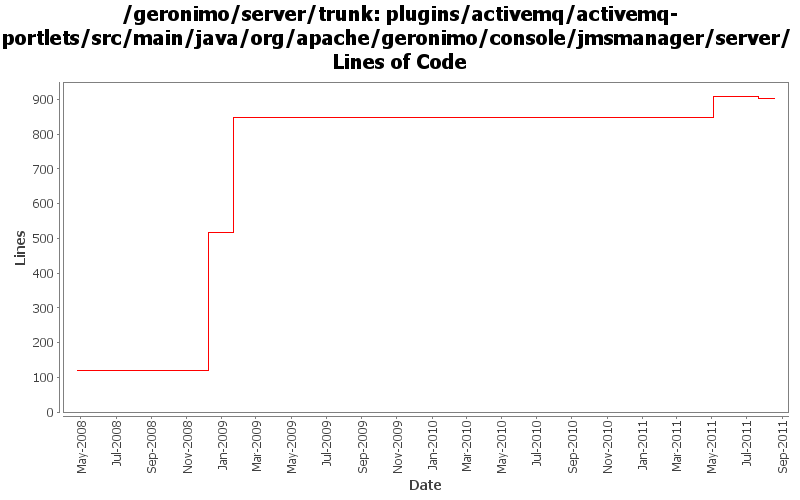

[root]/plugins/activemq/activemq-portlets/src/main/java/org/apache/geronimo/console/jmsmanager/server

| Author | Changes | Lines of Code | Lines per Change |
|---|---|---|---|
| Totals | 23 (100.0%) | 933 (100.0%) | 40.5 |
| dwoods | 9 (39.1%) | 791 (84.8%) | 87.8 |
| genspring | 4 (17.4%) | 135 (14.5%) | 33.7 |
| djencks | 2 (8.7%) | 3 (0.3%) | 1.5 |
| jdillon | 6 (26.1%) | 2 (0.2%) | 0.3 |
| xuhaihong | 1 (4.3%) | 1 (0.1%) | 1.0 |
| michaelfang | 1 (4.3%) | 1 (0.1%) | 1.0 |
Remove the hard-coded version number.
1 lines of code changed in 1 file:
GERONIMO-5859 Reenable JMS related portlets, additional patch from Shenghao Fang to remove the invalid geronimo-activemq dependency.
0 lines of code changed in 1 file:
GERONIMO-5859 Reenable JMS related portlets, patch from Shenghao Fang
135 lines of code changed in 3 files:
GERONIMO-4931 Run activemq under (aries) blueprint using xbean-blueprint
3 lines of code changed in 2 files:
GERONIMO-4610 Can not create a broker on Linux platform
1 lines of code changed in 1 file:
GERONIMO-4475 Improve JMS portlet for Borker configuration. Applied 4 patches from Ivan.
388 lines of code changed in 3 files:
GERONIMO-4337 rename AMQ5 modules to old names that apps expect
397 lines of code changed in 2 files:
GERONIMO-4337 rename AMQ5 modules to old names that apps expect
0 lines of code changed in 2 files:
GERONIMO-4337 remove old AMQ4 based modules
6 lines of code changed in 2 files:
More loggers back to static
2 lines of code changed in 2 files:
(GERONIMO-3985) Use SLF4J as the primary logging facade for Geronimo
0 lines of code changed in 4 files: